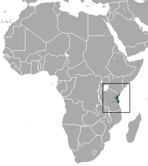

Описание

Длина тела составляет от 22 до 30 см, длина хвоста примерно 25 см, а вес примерно 500 г. Характерным признаком вида является длинная, подобная хоботу морда. Голова, плечи и брюхо рыжего окраса, остальная часть тела чёрная. Ноги длинные и тонкие, при этом задние конечности длиннее передних. Несмотря на небольшой размер ушных раковин, обладают хорошим слухом.
Образ жизни

Как и все хоботковые собачки, эти животные живут исключительно на земле. Они активны днём, а ближе к ночи они сооружают гнёзда из растительного материала в небольшом углублении на земле. Эти животные длительно живут моногамными парами и территориальны. Их питание состоит преимущественно из беспозвоночных (насекомых и моллюсков), иногда мелких позвоночных животных.
Размножение

Самки рождают одного или двух детёнышей, которые уже через 2 недели покидают свои гнёзда и отлучаются. Продолжительность жизни составляет от 4 до 5 лет.
Распространение
Вид распространён в юго-восточной Кении и северо-восточной Танзании с близлежащими островами (Занзибар и Мафия). Естественная среда обитания — это леса, при этом они обитают как в лесах вдоль побережья, так и на поросшей лесом холмистой местности.